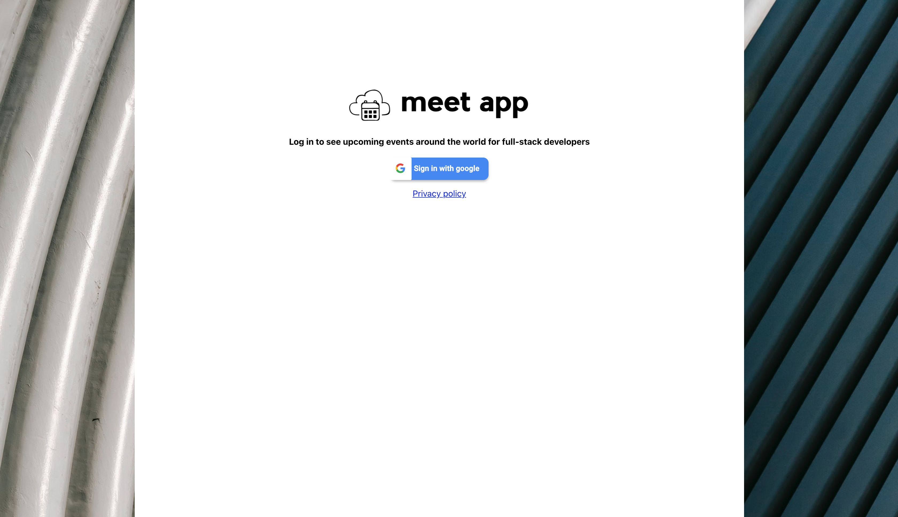
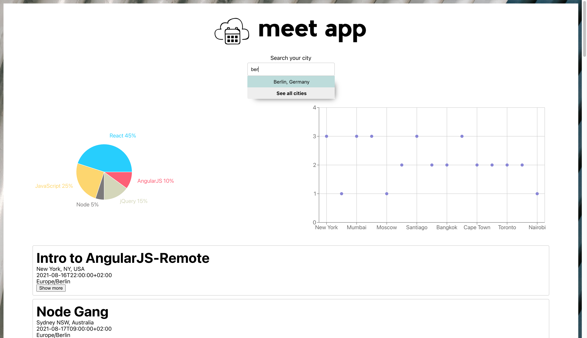

The Challenge
To create a serverless, progressive web application (PWA) using React based on the features that had been provided by CareerFoundry. The idea is to display and filter meetup events from the Google calendar API. It is developed using Test-Drive-Development techniques to ensure a high test coverage rate.
The Process
My process was to take the features provided by CF and write user stories.
The idea of the exercise was to implement test-drive development approach which means test first, code later.
We also implemented serverless functions hosted by a cloud provider (AWS). The application itself is also hosted online to make it shareable and installable. It can be used even when the user is offline. As it’s responsive, it displays well on any device. We also add some data visualisation and tools like Jest orEnzyme for unit and integration test and Puppeteer for end-to-end test. Cucumber for user acceptances test and CI/CD for all performance monitoring purposes.
The Goal
To built a serverless PWA with React library using a test-driven development (TDD) technique. The application uses the Google Calendar API to fetch upcoming events.


Key Features
Filter Events by City.
Show/Hide event details.
Specify number of events.
Use the App when is online.
Add an App shourcut to the home screen.
View a chart showing the number of upcoming events by city.
User Stories
As a user, I would like to be able to filter events by city so that I can see the list of events that take place in that city.
As a user, I would like to be able to show/hide event details so that I can see more/less information about an event.
As a user, I would like to be able to specify the number of events I want to view in the app so that I can see more or fewer events in the events list at once.
As a user, I would like to be able to use the ap pwhen offline so that I can see the events I viewed the last time I was online.
As a user, I would like to be able to add the app shortcut to my home screen so that I can open the app faster.
As a user, I would like to be able to see a chart showing the upcoming events in each city so that I know what events are organized in which city.